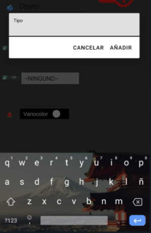
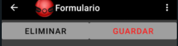

En el formulario introducimos los datos del pokémon que queremos guardar.
Todos los datos deben ser completados, exceptuando el segundo tipo.
Si no se encuentra el tipo del pokémon en el listado, se puede añadir otro en el botón que se encuentra a la derecha del primer tipo. 
Si es un nuevo pokémon, arriba solo saldrá la opción de guardar. Pero si es un pokemon que ya tenemos guardado, estará tambien la opción de eliminar. La opción de guardar actualizará los datos de este. 